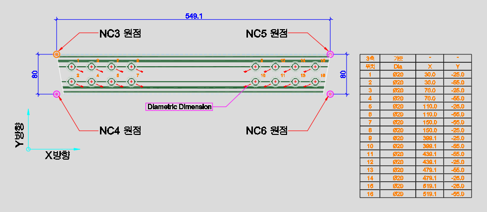
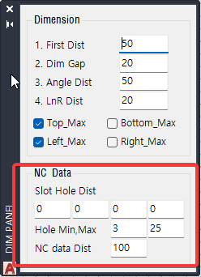

NC3 NC4 NC5 NC6
선택한 형상에서 DiametricDimension(지름 치수) 객체를 읽어
NC 가공용 홀 데이터 테이블을 도면에 자동으로 생성하는 명령입니다.
NC3~NC6은 원점 기준 모서리(좌상/좌하/우상/우하)만 다르며, 나머지 동작은 동일합니다.
도면에 기입된 지름 치수(DiametricDimension)를 자동으로 수집하여,
각 홀의 X/Y 좌표(원점 기준 상대거리)와 지름 정보를 NC 데이터 테이블로 변환합니다.
원점 기준 모서리를 NC3~NC6 중 선택하여 가공 기계의 원점 설정에 맞게 테이블을 생성할 수 있습니다.
| 명령 | 원점 기준 | 설명 |
|---|---|---|
NC3 | 좌측 상단 (Left-Top) | 선택 형상 영역의 최소 X, 최대 Z(Y) 좌표를 원점으로 사용합니다. |
NC4 | 좌측 하단 (Left-Bottom) | 선택 형상 영역의 최소 X, 최소 Z(Y) 좌표를 원점으로 사용합니다. |
NC5 | 우측 상단 (Right-Top) | 선택 형상 영역의 최대 X, 최대 Z(Y) 좌표를 원점으로 사용합니다. |
NC6 | 우측 하단 (Right-Bottom) | 선택 형상 영역의 최대 X, 최소 Z(Y) 좌표를 원점으로 사용합니다. |
DsOpt를 실행하여 Hole Min / Hole Max, Slot Hole Dist, NC data Dist 값을 확인하고 필요 시 조정합니다.DiametricDimension(지름 치수)이 기입되어 있는지 확인합니다. 없으면 테이블이 생성되지 않습니다.NC3 / NC4 / NC5 / NC6)을 명령창에 입력합니다.Yes 또는 No를 키보드로 입력합니다.

| 항목 | 설명 |
|---|---|
| 선택 대상 | 필터 없이 임의 객체를 선택합니다. 내부적으로 Shape_Curve / Shape_Hidden / Dim_Curve / Dim_Sub 레이어의 Line/PolyLine에서 형상 범위를 추출하고, DiametricDimension에서 홀 데이터를 읽습니다. |
| 홀 데이터 소스 | DiametricDimension(지름 치수) 객체만 인식합니다. 일반 Circle이나 Arc는 읽지 않습니다. |
| 홀 필터 | DsOpt의 Hole Min / Hole Max 값 범위 안에 있는 지름만 테이블에 포함됩니다. |
| 슬롯 홀 | DsOpt의 Slot Hole Dist(4개) 값과 일치하는 간격의 홀 쌍을 슬롯 홀로 분류합니다. |
| X_Gap 옵션 | 선택 시 [Yes/No] 키워드로 X_Gap Data(인접 홀 간 X 거리) 포함 여부를 전환합니다. 이전 선택값이 기본값으로 유지됩니다. |
| 원점 마커 | 산출된 원점 위치에 NC_Data 레이어 Point와 동심원(직경 5 / 12 / 13)이 자동 생성됩니다. |
| 테이블 위치 | 선택 영역 최대 X에서 NC_data_Dist(기본 100) 만큼 오른쪽에 테이블이 생성됩니다. |
| 텍스트 크기 | 현재 AutoCAD TEXTSIZE 시스템 변수를 사용합니다 (최소 3, 최대 50). |
| 레이어 | 원점 마커와 테이블 텍스트는 NC_Data 레이어(색상 40)에 생성됩니다. |
| 다중 영역 지원 | 선택된 엔티티가 Z 방향으로 분리된 복수 영역(최대 4개)을 포함하면 각 영역별로 테이블을 나누어 생성합니다. |
| 적용 환경 | AutoCAD / BricsCAD (Rhino 미지원) |
| 항목 | 기본값 | 설명 |
|---|---|---|
| Slot Hole Dist (×4) | 0 × 4 | 슬롯 홀로 분류할 홀 간격 거리 (4개까지 지정) |
| Hole Min | 3 | 테이블에 포함할 홀 최소 지름 |
| Hole Max | 25 | 테이블에 포함할 홀 최대 지름 |
| NC data Dist | 100 | 선택 영역 오른쪽 끝에서 테이블까지의 거리 |
| 항목 | 설명 |
|---|---|
| 원점 마커 | 선택 형상 범위의 지정 모서리에 Point + 동심원(직경 5 / 12 / 13)이 생성됩니다. |
| 홀 데이터 테이블 | 각 홀의 X/Y 좌표(원점 기준), 지름, 슬롯 홀 여부가 도면 텍스트로 출력됩니다. |
| 레이어 | 생성된 모든 요소는 NC_Data 레이어(색상 40)에 배치됩니다. |
DiametricDimension(지름 치수) 객체여야 합니다.
Circle이나 Arc를 직접 선택해도 홀로 인식하지 않습니다.
원점 위치는 Shape_Curve / Shape_Hidden / Dim_Curve / Dim_Sub 레이어의
Line/PolyLine 범위에서 자동 산출됩니다.
DsOpt의 Hole Min/Max 범위 밖의 홀은 테이블에 포함되지 않으므로,
명령 실행 전에 범위를 반드시 확인하세요.